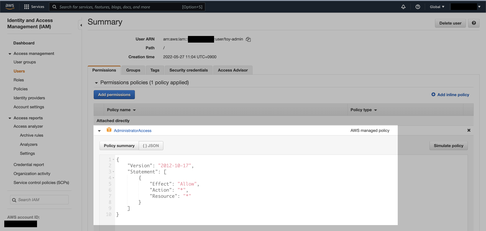
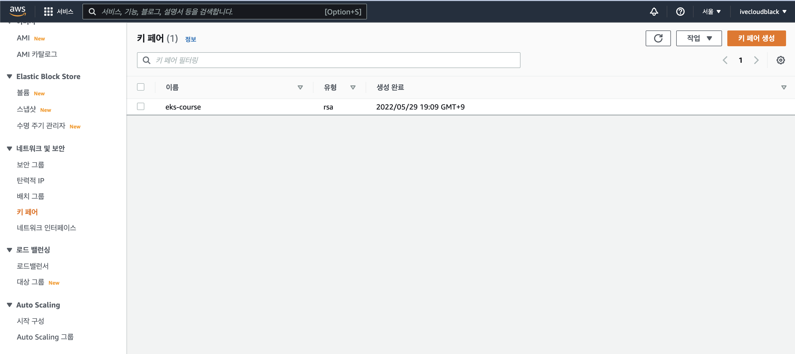
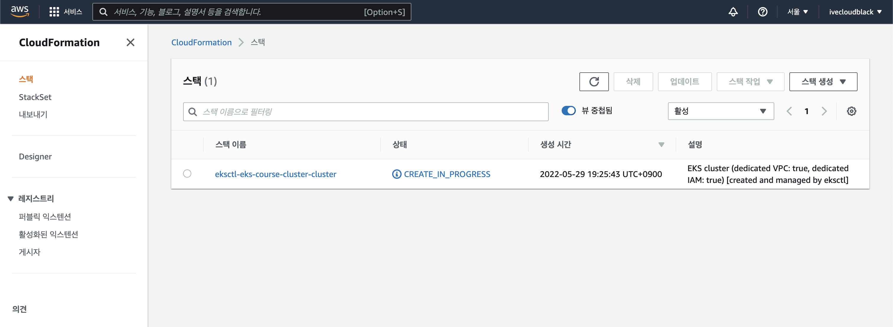
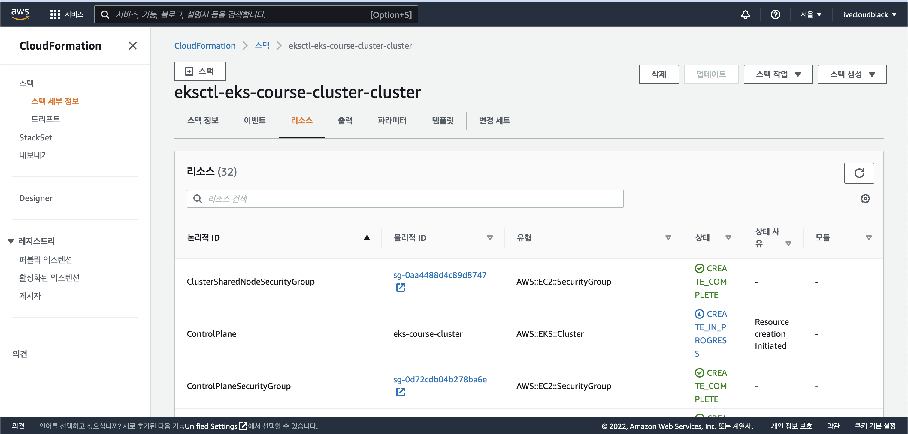
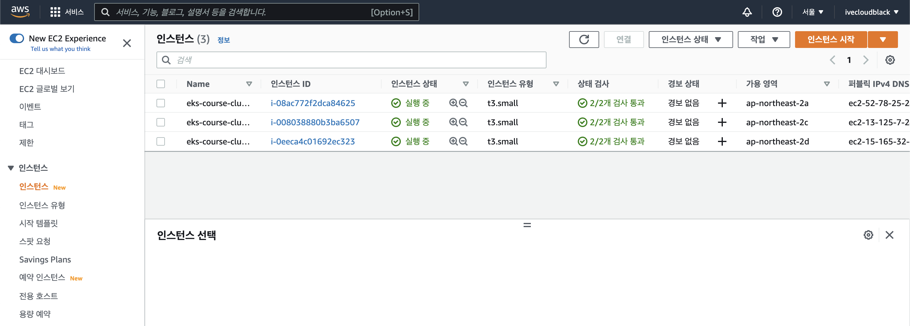

EKS Cluster 생성
개요
eksctl을 사용해서 자신만의 EKS 클러스터를 생성해보도록 하겠습니다.
주의사항
이 실습 과정으로 인해 AWS 비용이 발생할 수 있습니다.
실습이 끝난 후에는 실습환경 전체 정리를 참고해서 반드시 생성한 AWS 전체 리소스를 삭제해주세요.
계속 EKS Cluster를 켜두면 거액의 AWS 비용이 발생합니다.
전제조건
이 가이드에 포함된 실습을 진행하기 전에 아래의 몇 가지 준비사항이 필요합니다.
- AWS CLI 툴이 설치된 상태
- kubectl 툴이 설치된 상태
- eksctl 툴이 설치된 상태
이 글에서는 aws-cli, kubectl, eksctl의 설치방법까지는 다루지 않습니다.
환경
EKS Cluster
EKS Cluster를 아래와 같이 구성할 예정입니다.
- 리전: ap-northeast-2 (Seoul)
- 클러스터 이름: eks-course-cluster
- 노드그룹 이름: ng-1
- 1 nodegroup
- 3 worker node (t3.small)
실습비용 절약을 위해 인스턴스 타입은 t3.small로 정합니다.
Client
- OS: macOS Monterey 12.4 (M1 Pro)
- Shell: zsh + oh-my-zsh
- kubectl: v1.24.1
- aws-cli: 2.7.4
- eksctl: 0.100.0
실습
EKS 생성용 IAM User 생성
toy-admin이라는 이름의 AWS IAM User를 생성합니다.
권한은 AWS 관리형 정책인 AdministratorAccess를 부여합니다.

toy-admin 유저의 액세스 키를 발급 받은 다음, AWS CLI에서 Credential을 구성합니다.
$ aws configure --profile toy-admin
EC2 키페어 생성
AWS Management Console에서 EC2 키 페어를 새로 생성합니다.
키 페어 이름은 eks-course로 정합니다.

여기서 만든 SSH 키페어는 EKS Cluster의 EC2 노드를 생성할 때 사용되며, 전체 EC2 노드에 해당 키가 주입됩니다.
AWS CLI 인증
toy-admin 프로필의 Credential 설정을 확인합니다.
$ aws configure list --profile toy-admin
Name Value Type Location
---- ----- ---- --------
profile toy-admin manual --profile
access_key ****************X4XX shared-credentials-file
secret_key ****************8xxx shared-credentials-file
region ap-northeast-2 config-file ~/.aws/config
AWS_PROFILE 환경변수는 AWS CLI에서 현재 사용중인 프로필 이름을 지정합니다.
프로필을 default에서 toy-admin으로 전환하기 위해 환경변수를 설정합니다.
$ export AWS_PROFILE=toy-admin
프로필을 변경한 후에는 AWS CLI에서 현재 사용중인 IAM 권한을 확인합니다.
$ aws sts get-caller-identity
{
"UserId": "XXXXXQOVWG0FYM0OXXXXX",
"Account": "123456789012",
"Arn": "arn:aws:iam::123456789012:user/toy-admin"
}
결과값을 보면 toy-admin IAM User로 인증되어 있는 상태입니다.
ClusterConfig 작성
eksctl을 사용해서 EKS 클러스터 생성하려면 먼저 ClusterConfig가 필요합니다.
eks-cluster.yaml이라는 파일명으로 ClusterConfig yaml 파일을 작성합니다.
$ cat << EOF > eks-cluster.yaml
---
apiVersion: eksctl.io/v1alpha5
kind: ClusterConfig
metadata:
name: eks-course-cluster # 생성할 EKS 클러스터명
region: ap-northeast-2 # 클러스터를 생성할 리전
version: "1.22" # 클러스터가 사용할 Kubernetes Version
nodeGroups:
- name: ng-1 # 클러스터의 노드 그룹명
instanceType: t3.small # 클러스터 워커 노드의 인스턴스 타입
desiredCapacity: 3 # 클러스터 워커 노드의 갯수
volumeSize: 20 # 클러스터 워커 노드의 EBS 용량 (단위: GiB)
ssh: # 미리 생성한 EC2 key pair를 사용해야함
publicKeyName: eks-course
EOF
ClusterConfig 설명
eksctl의 ClusterConfig 작성 방법은 Config file schema를 참고하세요.
- 실습비용을 절약하기 위해 노드그룹의 인스턴스 타입은
t3.small, EC2 수량은3대로 설정합니다. - EC2가 사용할 EBS 볼륨 용량은
20GB로 설정합니다. publicKeyName값은 이전 과정에서 AWS 콘솔에서 생성한 EC2 Key Pair의 이름과 동일해야 합니다.
클러스터 생성
생성한 ClusterConfig 파일을 확인합니다.
$ ls
eks-cluster.yaml
작성한 eks-cluster.yaml 파일을 사용해서 EKS 클러스터를 생성합니다.
$ time \
eksctl create cluster \
-f eks-cluster.yaml
time 명령어는 EKS 클러스터 생성에 걸리는 전체 시간을 측정하기 위해 사용했습니다.
EKS 클러스터 생성은 AWS CloudFormation을 통해 모든 구성이 자동 진행됩니다.
AWS Management Console → CloudFormation → Stack에 들어가서 직접 진행사항을 확인할 수 있습니다.

VPC, Subnet, EC2, EBS, 보안그룹Security Group, ASGAuto Scaling Group, NAT Gateway 등 클러스터 운영에 필요한 모든 AWS 리소스를 CloudFormation으로 생성해주는 걸 실시간으로 확인할 수 있습니다.

$ time \
eksctl create cluster \
-f eks-cluster.yaml
...
2022-05-29 19:25:42 [ℹ] using EC2 key pair "eks-course"
...
중간에 출력된 로그를 보면 eks-course라는 이름의 SSH key pair도 잘 받아오는 걸 확인할 수 있습니다.
EKS 클러스터에 필요한 하위 리소스가 많기 때문에 클러스터 생성 완료까지 15~20분 걸립니다.
...
2022-05-29 19:43:41 [✔] EKS cluster "eks-course-cluster" in "ap-northeast-2" region is ready
eksctl create cluster -f eks-cluster.yaml 0.41s user 0.25s system 0% cpu 17:58.99 total
EKS 클러스터 생성 완료까지 17분 58초가 걸린 걸 확인할 수 있습니다.
EKS 클러스터 생성이 완료되면 kubectl context가 자동으로 새 클러스터로 변경됩니다.
현재 kubectl context를 확인합니다.
$ kubectl config current-context
toy-admin@eks-course-cluster.ap-northeast-2.eksctl.io
클러스터 확인
$ eksctl get cluster
NAME REGION EKSCTL CREATED
eks-course-cluster ap-northeast-2 True
서울 리전에 eks-course-cluster라는 이름의 EKS 클러스터가 생성되었습니다.
EKS 클러스터의 노드그룹 ng-1도 확인해봅니다.
$ eksctl get nodegroup --cluster eks-course-cluster
CLUSTER NODEGROUP STATUS CREATED MIN SIZE MAX SIZE DESIRED CAPACITY INSTANCE TYPE IMAGE ID ASG NAME TYPE
eks-course-cluster ng-1 CREATE_COMPLETE 2022-05-29T10:38:46Z 3 3 3 t3.small ami-06512ccb913a9d11d eksctl-eks-course-cluster-nodegroup-ng-1-NodeGroup-UQ0GUDZPSXUD unmanaged
저희가 구성한대로 t3.small 3대로 구성되어 운영중인 걸 확인할 수 있습니다.
kubectl명령어로 노드 리스트를 확인해도 결과는 동일합니다.
$ kubectl get node
NAME STATUS ROLES AGE VERSION
ip-192-168-12-158.ap-northeast-2.compute.internal Ready <none> 7m58s v1.22.6-eks-7d68063
ip-192-168-38-166.ap-northeast-2.compute.internal Ready <none> 7m54s v1.22.6-eks-7d68063
ip-192-168-80-123.ap-northeast-2.compute.internal Ready <none> 7m58s v1.22.6-eks-7d68063
AWS Management Console → EC2 에서도 인스턴스 3대가 생성된 걸 확인할 수 있습니다.

이제 EKS 클러스터 구축이 끝났습니다.
EKS 비용
- EKS 컨트롤 플레인의 비용은 1시간당 0.1USD 입니다.
- 노드그룹은 온디맨드 EC2 비용으로 산정됩니다. 위 예제의 경우는 t3.small on-demand x 3대 입니다.
- 그 밖에 NAT Gateway, EBS 비용도 추가로 나갑니다.
- 더 자세한 사항은 AWS 공식문서를 참고하세요.
실습환경 전체 정리
EKS 전체 비용이 부담스럽다면 필요할 때만 클러스터를 생성해서 실습하도록 합니다.
EKS 클러스터 삭제는 eks delete cluster 명령어를 사용하면 됩니다.
이전 과정에서 생성한 EKS 클러스터를 삭제하는 방법은 다음과 같습니다.
$ eksctl delete cluster \
-f eks-cluster.yaml \
--approve
eksctl로 EKS 클러스터를 생성하면 CloudFormation 스택으로 구성됩니다.
클러스터 삭제도 마찬가지로 스택만 제거하면 포함된 전체 AWS 리소스가 사라지므로 깔끔하게 EKS 관련 리소스 전체를 정리할 수 있습니다.
마치며
비용이 좀 나가지만 그래도 개인 소유의 EKS Cluster를 얻었습니다.
이제 자신이 원하는 대로 서비스를 배포하고 운영할 수 있습니다.
다들 쿠버네티스를 더 쉽고 재밌게 즐기길 바라면서 이만 글 마칩니다.
Bon voyage!
참고자료
eksctl | Config file schema
eksctl config file의 모든 값이 나와있는 가이드 문서.
eksctl | Examples
34개의 예제 config 파일들.